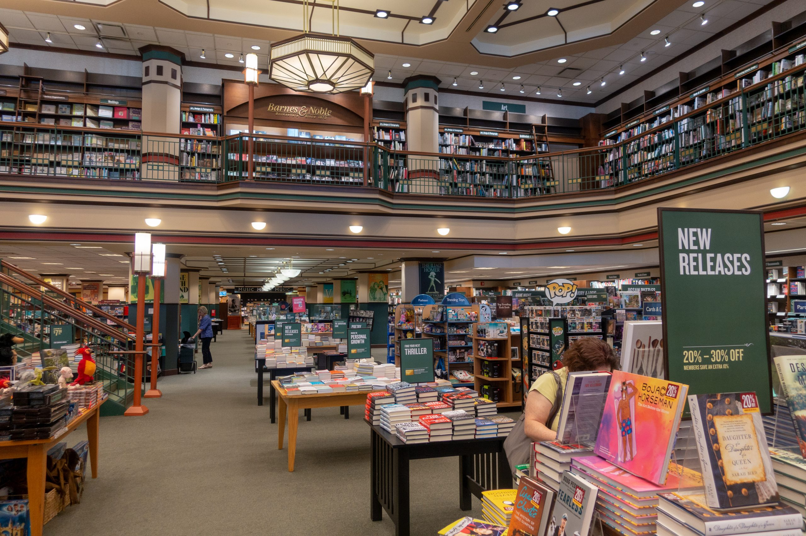
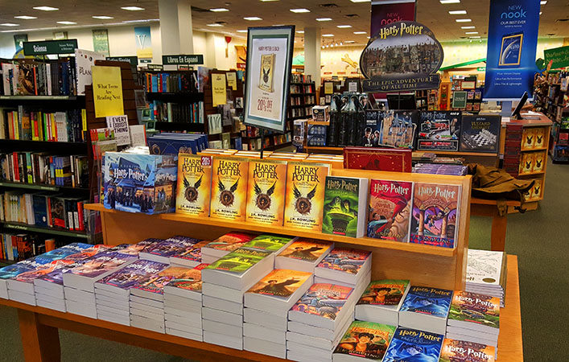
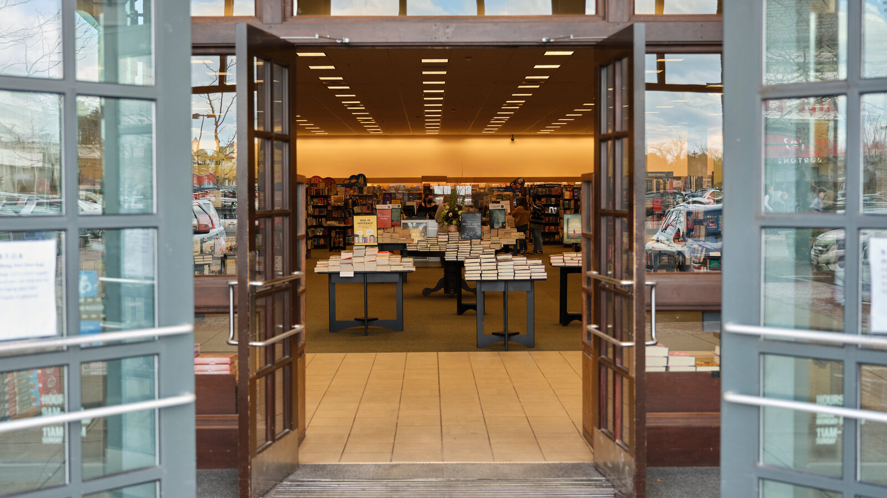

Barnes & Noble es una cadena de librerías fundada en 1886 por Charles M. Barnes, William Barnes y G. Clifford Noble. Comenzó como una pequeña librería de segunda mano en Wheaton, Illinois. En 1917, la empresa se trasladó a Nueva York y abrió su primera tienda en la ciudad en 1917.
A lo largo de los años, Barnes & Noble se ha expandido, convirtiéndose en una de las cadenas de librerías más grandes de Estados Unidos. En la década de 1970, la empresa fue adquirida por Leonard Riggio, quien la transformó en una cadena nacional. En la década de 1990, Barnes & Noble se convirtió en una de las primeras librerías en incursionar en la venta en línea con el lanzamiento de su sitio web.
Además de la venta de libros, la empresa amplió sus servicios ofreciendo música, películas, juguetes y artículos de papelería. A lo largo de su historia, Barnes & Noble ha experimentado desafíos debido a cambios en la industria del libro y la competencia con las ventas en línea, pero sigue siendo una presencia significativa en la venta minorista de libros en Estados Unidos.
Misión

Proporcionar a sus clientes el acceso a una amplia gama de libros, medios digitales y productos relacionados con la lectura y el conocimiento. Buscar ser una fuente confiable y accesible de inspiración, entretenimiento y aprendizaje para personas de todas las edades. Además, aspirar a crear comunidades de lectores alrededor de sus tiendas, promoviendo eventos y actividades que fomenten el amor por la lectura y el intercambio cultural.
Visión

Ser un destino principal para los amantes de los libros, ofreciendo una amplia gama de títulos y experiencias literarias.
Ser reconocidos como líderes en la industria de venta al detalle de libros y productos relacionados, proporcionando un espacio acogedor donde los clientes puedan descubrir, explorar y sumergirse en el mundo de la literatura y el conocimiento.
Ofrecer una experiencia única al cliente, combinando eventos culturales, programas de lectura, cafeterías y una amplia selección de libros físicos y digitales para satisfacer las necesidades de lectura y aprendizaje de sus clientes.
Valores

Pasión por los libros y la lectura: Fomentan el amor por la lectura y la importancia del conocimiento a través de su compromiso con la oferta de una amplia gama de libros y recursos educativos.
Diversidad y variedad: Buscan celebrar la diversidad cultural y la variedad de puntos de vista a través de la selección de libros y eventos que reflejan diferentes perspectivas y temas.
Excelencia y calidad: Se esfuerzan por ofrecer productos de alta calidad, desde libros hasta servicios, manteniendo altos estándares en su oferta.
Compromiso con la comunidad: Han mostrado un compromiso con las comunidades locales, ofreciendo espacios para eventos, lecturas y programas que involucran a los residentes y promueven la participación cultural.